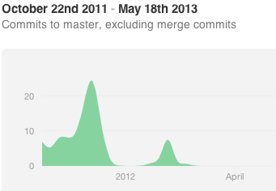

Why I'm Trying Literate Programming
I decided to experiment with literate programming recently because I felt like something must be wrong with this story: A colleague and I began a research project using MATLAB for a class. We both started with about the same amount of MATLAB experience: close to nil. We both started at the ground floor of development. There was no legacy code to speak of, and again there was only two of us. We spec’d out most of the simulation as a LaTeX document that clearly described the simulation mathematically based on a reference implementation. In my mind, there isn’t a better scenario for collaboration. However, late into the project, my colleague was getting shut out of participating in development. What shut my colleague out?
Let me be clear, my colleague was willing, smart, and hard-working. Just the kind of person one hopes to be working with, yet the project had grown into a labyrinth that only I knew how to navigate. Without me on hand to help navigate the growing code base, his efforts seemed stymied. I will be the first to admit that the code, and in particular my code, was not stellar—it was written to meet a deadline and both of us were green when it came to MATLAB. However, this wasn’t a large project, but it did grow rapidly. Below is a graph of the total commits as shown in github. (The repository I’m showing is not public unfortunately.)
My expectation was that having two people developing one code base from the beginning with equivalent experience should be a recipe for success. That did not turn out to be the case. Although the project did not fail outright, we ran our experiments, produced results, and should ultimately get a publication out of it. However, judging it on the basis of enabling collaboration, it was a failure with what are some of the best starting conditions possible. Just think how much worse a project will fare when one’s working on a code base with n contributors; each contributor joining at a different time with a differing amount of experience with the language, domain, and tools; and on a code base with a longer history and its own legacy issues? One glimmer of how things could be different was provided by the spec we wrote before beginning the implementation.
We had written up a spec that described the dynamics of the simulation as mathematical relationships. Everything we wanted the simulation to do was clear and easily inspectable. As we wrote the implementation, however, what was clear became obscure. “What does this section of code do?” If one compared the code with the spec and squinted one could start to piece together how the implementation fulfilled the spec. But this connection was fleeting. One had to compare between the spec and the code, make the connection, then enjoy the enlightenment before forgetting it. As the code base became the ground truth going beyond the spec, the utility of the spec was crippled, e.g., “Was the spec updated since we decided to do Y instead of X?” Of course it hasn’t. I’ve been too busy implementing Y.
In fact the spec ended up being a kind of reverse-engineered literate program. We used a reference implementation to draw out the details of what the original simulation was actually doing. In it, we had sections of code that we decoded into mathematical relationships. It is kind of amazing how much some code can be compressed when describing it mathematically. We could examine the code and math directly, changing that connection from fleeting into something lasting. Given this reverse-engineered literate program, we then enthusiastically went and re-encoded the math into code again and lost that connection and scrutability.
All I’ve said about literate programming so far is that it had math and code in one document. I think of literate programming as inverting the relationship between comments and code. In normal programming, comments are superfluous, thrown out, and don’t matter to the compiler. The code comes first and foremost and if you’re lucky, maybe there are some comments to lead you astray. In a literate program, one begins by writing a document for someone to read. Within the document, one specifies sections of code in whatever order he or she feel is best for the reader. Here is an example literate program and its literate source code; it uses the literate programming tool noweb. I wrote those for the Emacsy project which I proposed as a Google Summer of Code project.
An experiment that I would love to have tried is to take that spec, chuck out the reference implementation sections of code, and write the implementation as a truly literate program. I didn’t have enough experience with literate programming at the time to think of it, but even today the thought of encouraging someone to collaborate on a literate program seems like a hard sell, e.g., “Do you like to code? Great. Do you like to write? Awesome. Do you like math? No. Well, two out of three is WAY better than average.” But I am finding a lot of advantages to literate programming.
Advantages
A picture is worth a thousand ASCII pictures. A big advantage of literate programming is being able to include graphics. I had a problem recently where I was implementing a simple 2D ray cast. I sketched it out on Paper 53, labeled my variables, then baked that drawing right into the document. Usually, that connection—What does this code actually mean? What does it represent?—would have been fleeting. I would have made a sketch on graph paper, written the code, inevitably lost or trashed the sketch. Suppose I find a bug in my code months later. How am I going to figure it out? Well, I’ll probably try to reverse-engineer my sketch. Why do I do this to myself and everyone that has to maintain this code after me!? With literate programming I made that connection of what does this code mean into something lasting, and it’s not in a separate document that will be forgotten, unloved, and superseded because it’s the ground truth: it’s the source of the source.

You can read it like a book. Another thing I didn’t appreciate initially is that a literate program provides an unambiguous place to start with an unfamiliar code base and a direction to go. Literate programming linearizes a code base. More than that it linearizes the code to be understandable—not compilable. Imagine if books weren’t arranged in a linear fashion. Instead of starting at page one, expert readers suggest, “I like to start on page 34 work backwards, then jump to page 62.” Normally when I’ve decided I want to alter an existing code base, first I have to acquaint myself with it. I dive into whatever looks most promising: README, HACKING, main.c, or project.h. I look at those by convention, but the meat of the project that I want to alter could be anywhere in that file tree, and it may not be documented at all. I search, grep, and basically bumble around until I find the spots I need to edit. A literate program is a topological ordering of that file tree, ordered to make it easier to understand.

The comfort of plaintext, the richness of PDF. It is kind of amazing how low-tech coding is. If it’s not plaintext, then it will get corrupted and destroy your weekend. This is partly why I can’t take fully to Mathematica, which does allow for a rich, graphical programming and documentation language. Plaintext is comforting. In a world of inscrutable binary formats, plaintext stands out as being readily inspectable, wholly knowable, effortlessly editable. Most of the literate programming tools use LaTeX as their documentation language because Knuth, who started it all, did. And it is comforting that my documentation and code is in plaintext, can be checked in to git and diff’d, but that doesn’t prevent me from using a richer medium to better describe what my program does, should do, and can inspire others to do.
Disadvantages
LaTeX raises the barrier to entry. If a literate program has a mathematical bent, then using LaTeX as the documentation language is a blessing. But LaTeX is a tricky tool and it raises the barrier to entry considerably for would-be collaborators. If I wanted to write a literate program that was not math heavy, I’d prefer using Markdown as the documentation language. The first literate program tool was WEB, and it dictated the programming language, a dialect of pascal, and the documentation language, LaTeX. Many tools that followed were programming language neutral, but the documentation language has not been allowed the same freedom. I think the programmer should be able to select both languages. The Docco project uses plain old Markdown as its documentation language. Its simplicity is inspiring. The downsides are that one may not reorder code to ease its explanation; the code must be in the order the compiler expects; and its one code file per Markdown file.
Tool support is lacking. Literate programming is not mainstream, so
the tool support is sometimes lacking. For instance, #line compiler
directives are a necessity. If compiler errors direct you to the
generated source code rather than the literate code, forget every
mildly good thing you’ve ever heard about literate programming; you’ve
entered hell. I’ve been writing a lot of code in GNU Guile
Scheme and I needed #line
directives, which seems imminently doable using reader macros.
However, it actually did require me to patch Guile in order to do it
in the general case. I will write up another post and share that
patch soon.
There are some other disadvantages:
-
It takes more time. Literate programming does take more time than just slapping some code together.
-
Multiple modes in Emacs, ha! I use Emacs, and Emacs does many wonderful things, but multiple modes is not one of them. In a noweb file, multiple syntaxes are nested together and the Emacs regex-based syntax highlighter and mode detector are not good enough. I wish Emacs used Parsing Expression Grammars (PEGs).
-
Writing raises the barrier to entry. Knuth asks us to not only write good code but also to write well, and neither of these are easy tasks. Asking for both from every contributor is a tall order.
Conclusion
I’m not suggesting that literate programming is a silver bullet or the best way to write every program. I don’t use it for everything. I’m only using it on programs that I want to encourage collaboration on. My hope is that it will help me avoid the story I outlined at the beginning where collaborators are shut out of participating because the edifice one builds becomes an inscrutable labyrinth; however, literate programming may be a double-edged sword due to it raising the barrier to entry. I haven’t gotten the chance to see whether literate programming helps or hurts a project. My current projects are solo so far, but I am enjoying trying to program literately. There is a grandeur in this kind of programming.